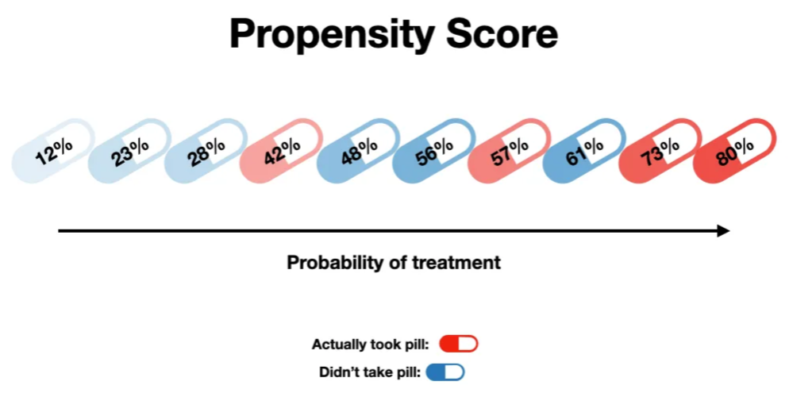

Propensity scores#
Executive summary
Propensity scores are the probability of being in the treatment/exposure group, given your baseline characteristics.
A propensity score is the ‘probability of treatment assignment conditional on observed baseline characteristics’. It was defined by was Rosenbaum and Rubin (1983). It is a ‘balancing score: conditional on the propensity score, the distribution of measured baseline covariates is similar between treated and untreated subjects’. [Austin 2011]
Propensity scores are often estimated using a logistic regression model with:
Outcome = Treatment (e.g. insulin therapy)
Predictors = Observed baseline characteristics (e.g. blood pressure, BMI, lipid profile)
Propensity score = Predicted probability of treatment from the fitted model [Valojerdi et al. 2018]
Image from Shaw Talebi on Towards Data Science:

Use of a propensity score enables incorporation of ‘a larger number of background covariates because it uses the covariates to estimate a single number’. [Valojerdi et al. 2018]
Four different propensity scores methods are used for removing the effects of confounding:
Stratification on the propensity score
Propensity score matching
Inverse probability of treatment weighting (IPTW) using the propensity score
Covariate adjustment using the propensity score [Austin 2011]
Assumptions of propensity score analysis/methods:
All covariates related to outcome and treatment (exposure) are measured and included
SUTVA - treatment effect for one individual is not affected by the treatment status of another
The assumptions of logistic regression [Valojerdi et al. 2018]